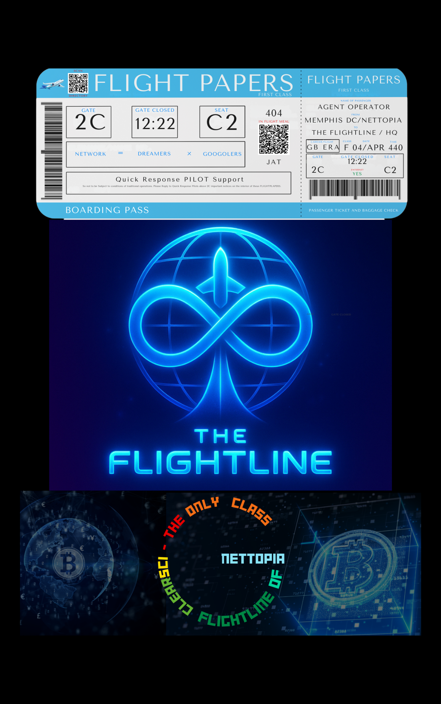

This seat watches the rails, ledgers, and towers that carry the grid.
Not every user ever needs to see this view — only those responsible for keeping
FlightLine upright.
Rails · Towers · DSX Skeleton
Above City, Below Cloud
25/8 Monitoring & Adjustments

What Lives at This Seat
Master view of city grids and where circulation is strong or weak.
Awareness of BTEN Tower health and expansions.
Checks that Proof Stack is not being bypassed.
Signals to HQ when something needs reinforcement, not just praise.
How JT and HQ Interlock
HQ makes calls on direction and deployment.
JT makes sure the tracks, gates, and ledgers can physically carry that decision.